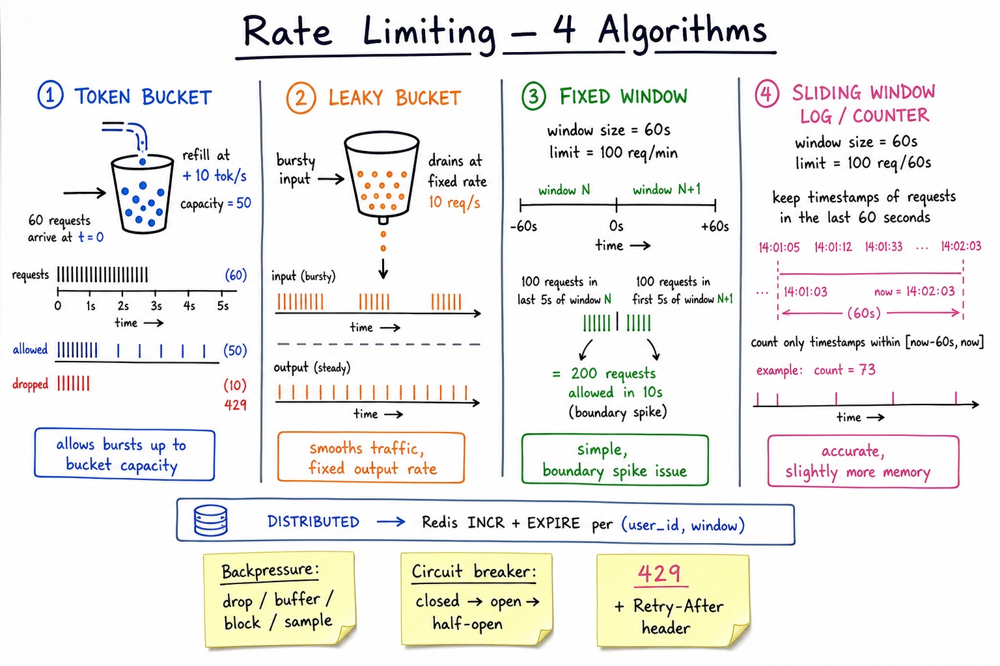

Backpressure & Rate Limiting // Concept
Producers outpace consumers. Downstream slows or fails. Naive systems collapse under load — one bad client takes the whole fleet down. Backpressure + rate limiting + circuit breakers keep the system alive when traffic exceeds capacity.

Four rate-limit algorithms side-by-side: token bucket (bursty allowed), leaky bucket (smooths to fixed rate), fixed window (simple, boundary spike), sliding window log (accurate). Plus backpressure styles, circuit breaker states, 429 + Retry-After.
01 — What Problem It Solves
WITHOUT BACKPRESSURE: Bursty client sends 10x normal traffic. Service queue grows unbounded. Memory fills, GC pauses, p99 explodes. Other clients suffer. Cascading failure to dependencies. System hangs at high latency until human intervention. WITH BACKPRESSURE + RATE LIMITS: Rate limit at the edge: reject excess with 429. Bounded internal queues: when full, drop or fail-fast. Circuit breaker around dependencies: stop hammering a slow service. Bulkhead pools: isolate fast and slow work paths. Result: degraded but stable. SLO maintained for most clients.
Backpressure is the system telling itself: "I can't keep up. Slow down or shed load — don't pretend everything's fine."
01a — Core Vocabulary
| Term | Meaning |
|---|---|
| Backpressure | Downstream signaling upstream "I can't accept more right now." |
| Rate limit | Cap on requests/sec per (client, API, region). |
| Token bucket | Bucket holds tokens, refilled at rate R, capped at C. Each request consumes a token. Allows bursts up to C. |
| Leaky bucket | Queue drains at fixed rate. Bursty input becomes steady output. |
| Fixed window | Counter resets every N seconds. Simple but boundary-spike vulnerable. |
| Sliding window | Tracks timestamps (log) or weighted recent (counter). Accurate. |
| 429 Too Many Requests | HTTP status for "rate limited"; should include Retry-After. |
| Circuit breaker | Wraps a dependency call. States: closed → open → half-open. |
| Bulkhead | Isolated thread/connection pool per dependency. One slow dep can't drain all resources. |
| Retry storm | Synchronized retries amplify load right when system is recovering. |
| Jitter | Random delay added to backoff so retries spread out in time. |
| Load shedding | Drop low-priority requests to keep high-priority alive. |
| Sampling | Take only X% of events when full data is impossible. |
02 — Approaches
Rate-limiting algorithms
| Algorithm | Bursts? | Accuracy | Memory |
|---|---|---|---|
| Token bucket | Yes, up to capacity C | High | O(1) per key |
| Leaky bucket | No (smooths) | High | O(1) per key |
| Fixed window | 2× at boundary | Low | O(1) |
| Sliding window log | No | Perfect | O(requests in window) |
| Sliding window counter | No | ~99% | O(1) |
Backpressure styles
- Drop — reject newest (LIFO) or oldest (FIFO).
- Buffer — queue (bounded!). When full, falls back to drop or block.
- Block / slow down — tell upstream to wait (Reactive Streams).
- Sample — keep X% randomly (logs, metrics, analytics).
03 — Diagram
Diagram above shows the 4 algorithms with their timing behavior: token bucket allows burst, leaky smooths, fixed has boundary spike, sliding is accurate. Plus the backpressure menu + circuit-breaker FSM + 429 contract.
04 — Four Rate-Limit Algorithms
Token bucket
STATE: tokens (current), capacity, refill_rate
on request:
now = time()
tokens = min(capacity, tokens + (now - last) * refill_rate)
last = now
if tokens ≥ 1:
tokens -= 1
allow
else:
deny (429)
PROPERTIES:
- Allows bursts up to "capacity" (e.g. capacity=50, refill=10/s → 50 burst then 10/s sustained).
- Most popular algorithm. Used by AWS, Stripe, GitHub.
Leaky bucket
QUEUE of fixed size. Drains at rate R. Incoming requests: if queue full, drop (or 429). PROPERTIES: - Output is smooth: at most R/s downstream, no matter what came in. - Smooths bursty input. Used for traffic-shaping (telecom, video streaming). - Different from token bucket: leaky always paces output to R; token bucket allows immediate bursts.
Fixed window
counter = N requests in [bucket_start, bucket_start + 60s]
when window expires, reset counter to 0.
PROBLEM: 100 reqs in last 5s of window N + 100 reqs in first 5s of window N+1
= 200 reqs in 10s, even though limit was 100/min.
The boundary spike doubles your effective limit.
PRO: trivial. Cons: edge spikes.
Sliding window (log)
Store every request timestamp in a sorted structure (Redis ZSET). on request t: ZRANGEBYSCORE key -inf (t - 60) → remove old if ZCARD key < 100: ZADD key t t → allow else: deny ACCURATE but O(requests-in-window) memory.
Sliding window counter
Weighted average of current + previous window: weight = (now - window_start) / window_size effective = previous_count * (1 - weight) + current_count if effective ≥ limit: deny O(1) memory, ~99% accurate, no boundary spike. Used by Cloudflare, Stripe (variant).
05 — Distributed Rate Limiter
SINGLE-NODE in-memory counter only works on one server. At multi-instance scale: every API node must agree on the count for a key. OPTION 1: Redis counter (most common) INCR key # atomic EXPIRE key 60 NX # idempotent TTL set on first hit if value > limit: deny Latency: ~0.5-1ms per check (extra round-trip per request). OPTION 2: Sticky shard Route same client to same API instance (consistent hash). Each instance has authoritative counter for its keys. Avoids Redis round-trip; works if you can route deterministically. OPTION 3: Token-aware gateway Envoy / Kong / Apigee / NGINX have built-in rate limiters with shared state (Redis or gossip). PROBE FOR INTERVIEW: "How do you make rate limiting consistent across N API instances?" → Redis with INCR + EXPIRE; or sticky sharding by client ID. See rate limiter HLD for the full design.
06 — Backpressure Styles
| Style | How | When |
|---|---|---|
| Drop newest | Reject incoming when full | Time-sensitive data; old > new (live stream chat tail) |
| Drop oldest | Evict head when full, accept new | Old data stale; new > old (telemetry, fresh quotes) |
| Buffer (bounded queue) | Hold up to N then fall back to drop or block | Bursty but average within capacity |
| Block / async slow-down | Producer is told to pause; Reactive Streams <request(N)> | In-process pipelines, when producer can wait |
| Sample | Probabilistically drop X% | Metrics, logs, click streams. See FB Live comments (sampling under load). |
| Tiered shed | Drop low-priority first; keep high-priority | API with paid + free tiers; checkout vs browse |
Never have an unbounded queue. Unbounded = OOM. Always pick a backpressure strategy for "what when full."
07 — Circuit Breaker
STATES: CLOSED → OPEN → HALF-OPEN
CLOSED: requests flow normally. Track failure rate over rolling window.
If failure rate > threshold (e.g. 50% over last 20 reqs): → OPEN.
OPEN: reject all requests instantly with circuit-open error.
No call to dependency. After cool-down (e.g. 30s): → HALF-OPEN.
HALF-OPEN: allow a few probe requests through.
If all succeed: → CLOSED.
If any fail: → OPEN (extend cool-down).
WHY IT'S CRUCIAL:
- Slow dependency is worse than dead dependency (you tie up threads).
- Circuit breaker fails FAST, freeing your resources for healthy traffic.
- Prevents cascading failure: your service stays up even when DownstreamX is dying.
LIBRARIES:
- Hystrix (Netflix, deprecated but conceptually canonical)
- Resilience4j (Java)
- Polly (.NET)
- Envoy (built-in: outlier detection + retry budget)
PROBE: "How do you avoid retrying a dead service?"
08 — Retry Storms & Jitter
NAIVE RETRY: if fail: sleep(1s); retry if fail: sleep(2s); retry if fail: sleep(4s); retry (exponential backoff) PROBLEM: Service goes down at T=0. 10,000 clients all fail at T=0. All retry at T=1s. Service comes back up at T=1s and is crushed by 10K simultaneous retries. Repeat → thrashes forever. FIX: JITTER. sleep_time = base * 2^attempt * uniform(0, 1) # full jitter At T=1s, retries are uniformly spread between 0-1s, 0-2s, 0-4s. Service comes back up; retries arrive smeared in time. VARIANTS: - "Full jitter": uniform(0, base * 2^n). « recommended - "Equal jitter": base * 2^n / 2 + uniform(0, base * 2^n / 2) - "Decorrelated jitter": min(cap, uniform(base, prev * 3)) ALSO: - Cap max retries (e.g. 3). Don't retry forever. - Use a retry BUDGET (Envoy/Finagle): only retry if recent retry rate < X% of traffic. - Respect 429's Retry-After header (server says "come back after 5s"). REFERENCE: AWS Architecture Blog — "Exponential Backoff and Jitter" (Marc Brooker). See also job scheduler for exponential backoff with jitter.
09 — Graceful Degradation
- Bulkheads — separate thread/connection pools per dependency. Slow Recommendation Service can't drain Payment Service's pool. Inspired by ship compartments.
- Tier traffic — checkout > product detail > search > recommendations. Under load, shed bottom-up.
- Feature flags — flip off non-critical features dynamically (e.g. "disable recommendations until p99 recovers").
- Stale data — serve stale cache instead of failing.
stale-while-revalidatein HTTP, or app-level fallback. - Sampling under load — metrics: sample 10%, multiply by 10. FB Live: sample comments per stream. Accept some inaccuracy to stay up.
- Async / queue — non-critical writes (analytics, audit) go to a queue instead of synchronous DB write.
- Honest 503 — if you can't serve, return 503 + Retry-After fast, don't hold the connection.
N-2 — Where It Shows Up
- Rate limiter (HLD) — parent system design with full multi-region story.
- FB Live comments — sampling under load to handle viral streams.
- Job scheduler — exponential backoff with full jitter on retries.
- Uber — surge pricing as a backpressure signal; rate limit drivers' polling.
- Notification system — per-channel rate limits (don't spam SMS).
- Payment system — circuit breaker around external processor calls.
- Message queue patterns — consumer-side backpressure when broker is faster than consumer.
- Load balancing — LB-side load shedding.
- Idempotency — required so retries with jitter are safe.
N-1 — Common Interview Probes
- "Which rate-limit algorithm and why?" → token bucket for most APIs; sliding window when burst is unacceptable.
- "How do you do this across N API instances?" → Redis INCR or sticky shard.
- "What does a 429 response look like?" → status 429, Retry-After header, error body.
- "Retry storm — how do you prevent?" → exponential backoff + full jitter + retry budget.
- "Circuit breaker states?" → closed/open/half-open with thresholds.
- "Bulkhead vs circuit breaker?" → bulkhead = isolated pool, circuit = fail-fast around one dep.
- "What if the rate limiter itself goes down?" → fail open (allow) or fail closed (deny), pick by SLO.
N — Interview Q&A
Which rate-limiting algorithm do you pick by default?
Token bucket. It allows bursts up to capacity (so users don't get blocked by short spikes) but enforces sustained rate. Easy to implement (O(1) state per key), industry standard, used by AWS / Stripe / GitHub. Use sliding-window counter when bursts are unacceptable (auth endpoints, abuse-prone).
Fixed-window vs sliding-window — what's the boundary problem?
Fixed window resets the counter every N seconds. A client can do 100 reqs in the last 5s of window A and 100 more in the first 5s of window B — that's 200 reqs in 10s, double the intended 100/min limit. Sliding window tracks time-relative usage, no boundary effect.
How does a distributed rate limiter work?
Centralized counter in Redis: INCR key; check value vs limit; EXPIRE key N on first hit (atomic). Single network round-trip (~1ms) per request. Alternative: route same client to same API instance (sticky shard) so a local counter is authoritative. See rate limiter HLD.
What's a retry storm and how do you prevent it?
Service goes down; thousands of clients fail simultaneously; they all retry at the same backoff schedule → the recovering service is hit by a synchronized wave. Fix: full jitter (sleep = uniform(0, base * 2^n)) spreads retries; cap max retries (3); use a retry budget so retries are at most X% of traffic.
Why does a slow dependency hurt more than a dead one?
Dead = fails fast, you free your thread/connection and try alternatives. Slow = each thread blocks for seconds; pool depletes; your service can't handle anything else. Circuit breaker turns "slow" into "fast fail" by opening after a few timeouts — restores capacity.
Circuit breaker states & thresholds?
Closed (normal) → track failure rate over rolling window (e.g. 20 reqs). If rate > 50% → Open (reject all, fail fast) for cool-down (30s). After cool-down → Half-Open (allow N probes). Probes all succeed → back to Closed. Any probe fails → back to Open (longer cool-down). Tune thresholds to your service's SLO.
What's a bulkhead?
Isolated resource pool per dependency. Calls to UserService use pool A (50 threads); calls to RecommendationService use pool B (50 threads). If Recommendation is slow and pool B saturates, User calls still have pool A available. Ship compartments — one flooded section doesn't sink the ship.
Should the rate limiter fail open or closed if Redis is down?
Trade-off. Fail open = allow all traffic, lose the rate-limit protection, potential abuse. Fail closed = deny all, total outage. Most production systems fail open with a local fallback (in-memory limit per node, looser but live). Critical security-flavored limits (login attempts) fail closed.
What does a good 429 response look like?
Status 429 Too Many Requests, header Retry-After: 30 (seconds or HTTP date), body with structured error {"error":"rate_limited","message":"...","limit":100,"remaining":0,"reset":1672531200}. Headers like X-RateLimit-Limit / X-RateLimit-Remaining / X-RateLimit-Reset let smart clients self-throttle.
When should you sample instead of process all?
When (a) data is statistical (metrics, logs, click streams) and exact counts aren't needed; (b) load exceeds capacity and dropping some is better than failing all. Pattern: sample 1% under normal load (saves cost), 10% under high load (saves capacity), 100% under low load. Extrapolate by 1/sample-rate for analytics.
How do retries interact with idempotency?
Without idempotency, retries cause duplicate effects (double-charge). Every retry-safe API must be idempotent: client supplies an Idempotency-Key; server dedupes. See idempotency. Retry storms are mostly safe if every step is idempotent — the worst case is wasted work, not corruption.
SDE-2 vs SDE-3 differentiator?
| SDE-2 | SDE-3 |
|---|---|
| Names token bucket; "use a rate limiter" | Picks algorithm per SLO; designs distributed limiter with Redis INCR + EXPIRE or sticky shard; uses circuit breaker + bulkhead + retry budget + full jitter; reasons about fail-open/closed; tiers traffic + sheds low priority; respects 429 Retry-After; integrates with idempotency for safe retries; samples under load (FB Live style) |